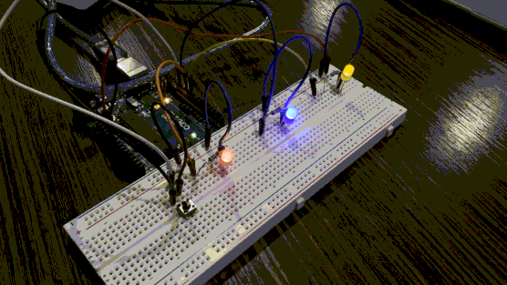
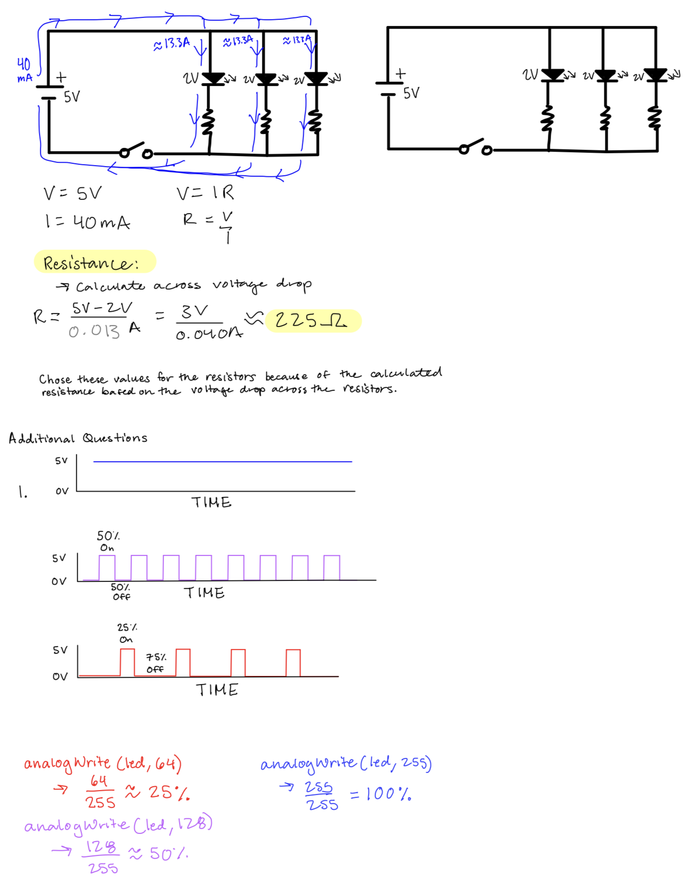
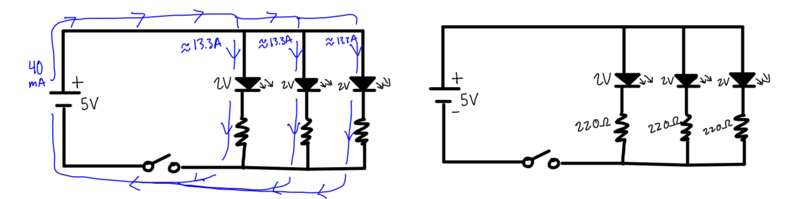
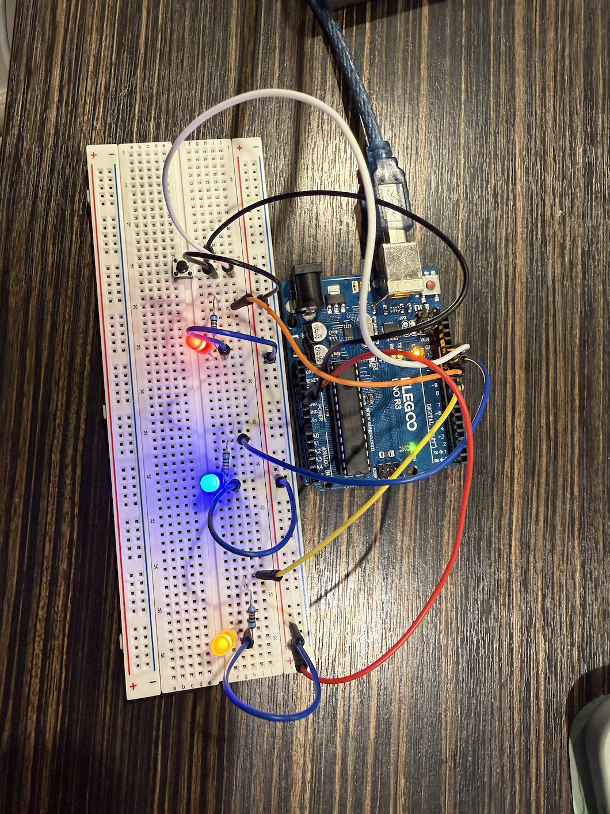
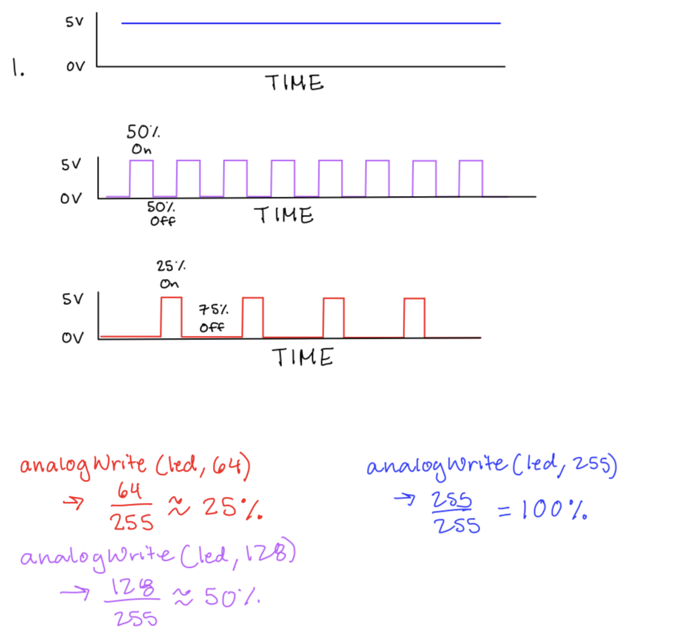
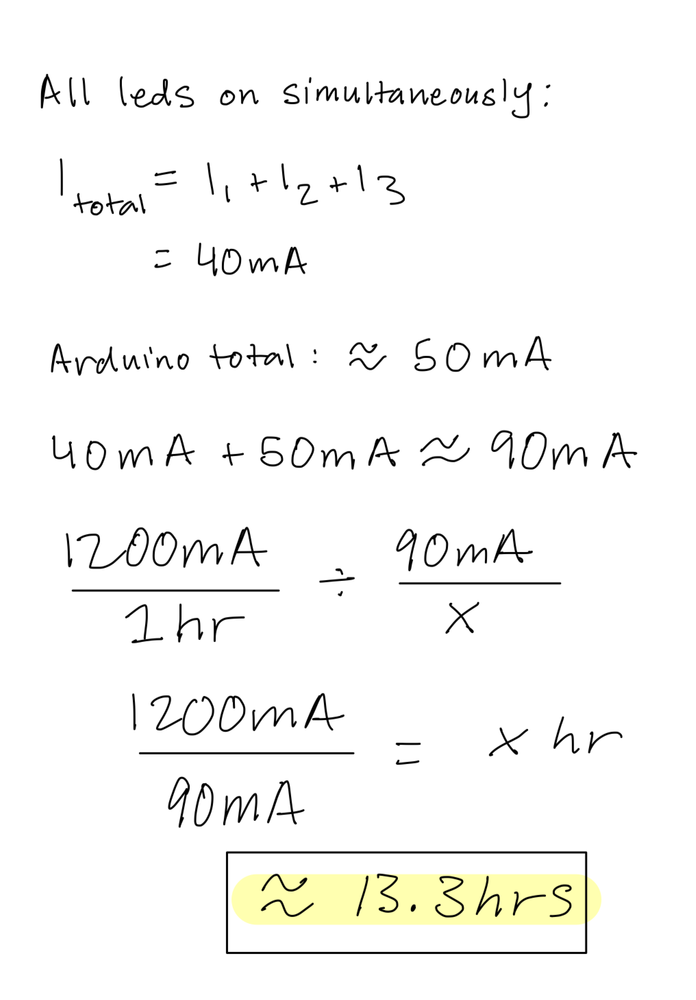

In Assignment 2, I created a light-up toy prototype that has a button switch!

Above are my calculations for the current, which determined the value of resistors I used. I chose 220 Ω resistors because after calculating the resistance using Ohm's Law and taking into account the voltage drops across the resistors, I found that 220 Ω would allow the current that passes through the circuit to stay under 40mA. This was also taking into account the voltage drop across the resistors.

Here is the schematic diagram I drew for this assignment.

Here is a photo of the circuit I put together, based on my calculations.
//Pin Setup
const int buttonPin = 13;
const int yellowPin = 9;
const int bluePin = 11;
const int redPin = 10;
//Button States
int buttonState = 0;
int lastButtonState = buttonState;
//LED States
int ledState = 0;
//Setting the brightness variable to 0
int brightness = 0;
//Setting the fade amount to 4
int fadeAmount = 4;
void setup() {
//initialize the pin that the red LED is connected as an output
pinMode(redPin, OUTPUT);
//initialize the pin that the blue LED is connected as an output
pinMode(bluePin, OUTPUT);
//initialize the pin that the yellow LED is connected as an output
pinMode(yellowPin, OUTPUT);
//initialize the pushbutton switch as an input
pinMode(buttonPin, INPUT);
Serial.begin(9600);
}
void loop() {
//setting up the states of the button switch
buttonState = digitalRead(buttonPin);
//printing out the current state of the button for debugging
Serial.println(buttonState);
//run if the button is pressed and was previously not pressed
if(buttonState == HIGH && lastButtonState == LOW){
//print toggle message
Serial.println("toggling the LED");
//toggle LED state
ledState = !ledState;
}
//store the current button state
lastButtonState = buttonState;
//loop through LED pins 9–11
for(int thisPin = 9; thisPin < 12; thisPin++){
if(ledState){
//set brightness when LED is on
analogWrite(thisPin, brightness);
} else {
//turn LED off
digitalWrite(thisPin, 0);
}
}
//fade logic when LED is on
if(ledState){
brightness += fadeAmount;
//reverse fade direction at bounds
if(brightness <= 0 || brightness >= 255){
fadeAmount = -fadeAmount;
}
//controls fade speed
delay(10);
}
}

Above is Voltage over Time graphs for Question 1.

I used 220 Ω resistors as I didn't want to damage the Arduino by having a higher current. This drew approximately 40 mA of current.
The actual voltage across LED is: 2.5V at the maximum.
The only use of AI in this assignment was to assist with converting the formatting of the code snippet. There was no other use of AI for this assignment aside from formatting.